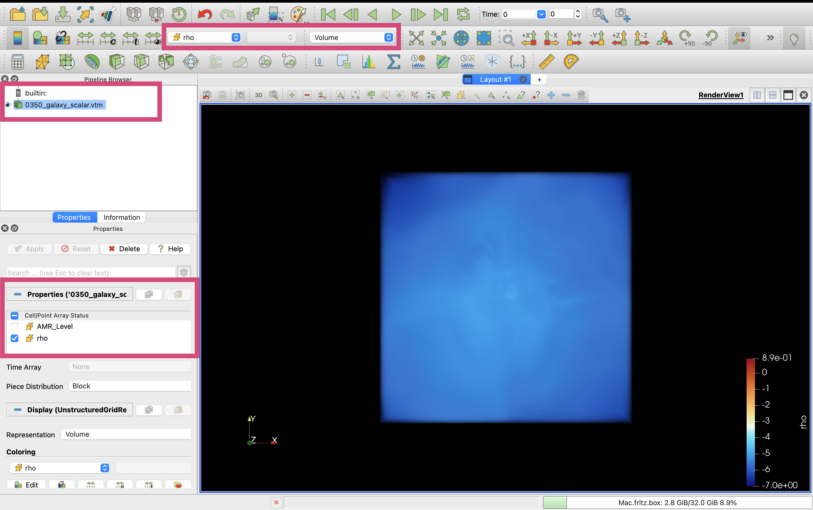
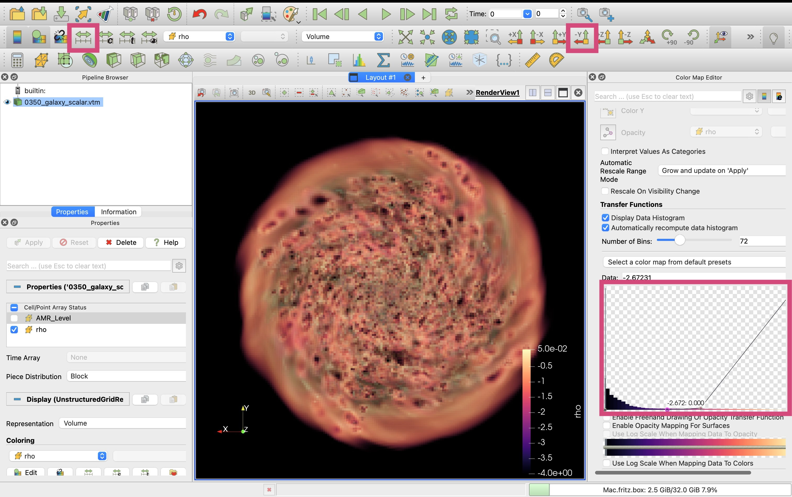
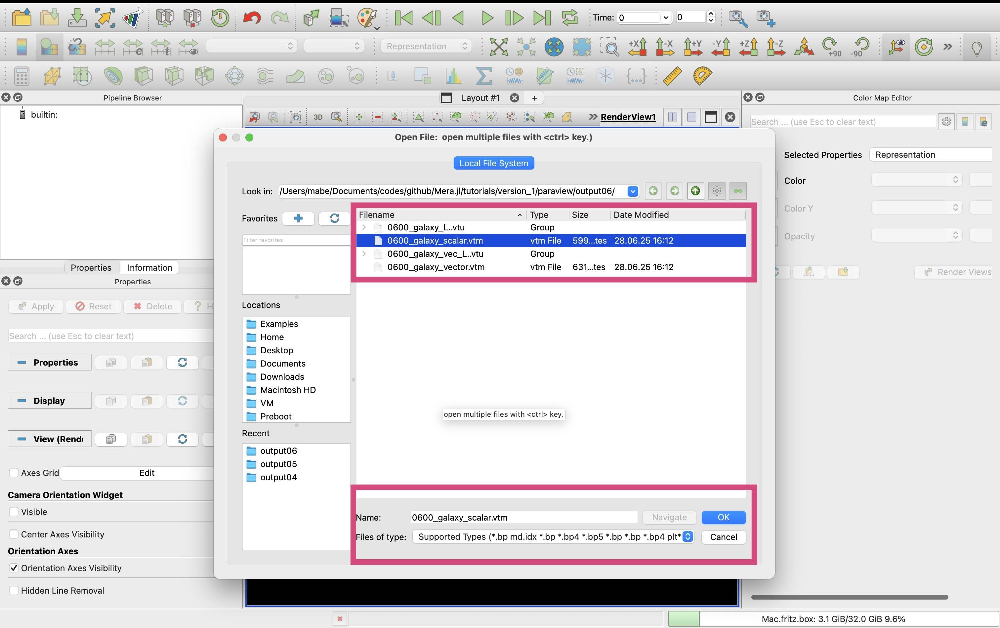
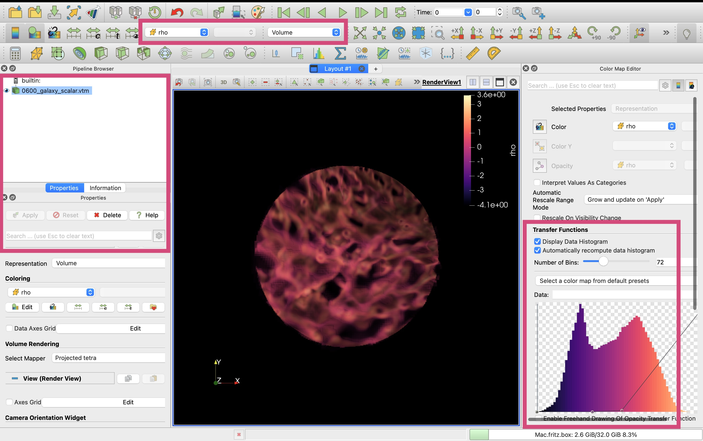

Hydro: Export Selected Variables to VTK
Export hydrodynamical simulation data to VTK format for advanced 3D visualization in ParaView. This tutorial demonstrates how to convert MERA hydro data into VTK files with customizable resolution, variable selection, and coordinate systems.
Quick Reference
Essential Functions
# Basic scalar export
export_vtk(data, "output_prefix",
scalars=[:rho, :T], scalars_unit=[:nH, :K])
# Scalar export with logarithmic scaling
export_vtk(data, "output_prefix",
scalars=[:rho], scalars_unit=[:nH],
scalars_log10=true)
# Vector export
export_vtk(data, "output_prefix",
vector=[:vx, :vy, :vz], vector_unit=:km_s,
vector_name="velocity")
# Combined scalar and vector export
export_vtk(data, "output_prefix",
scalars=[:rho], scalars_unit=[:nH], scalars_log10=true,
vector=[:vx, :vy, :vz], vector_unit=:km_s, vector_name="velocity")
# Resolution and cell limit control
export_vtk(data, "output_prefix",
scalars=[:rho], scalars_unit=[:nH],
lmax=9, # Maximum AMR level
max_cells=100_000, # Cell count limit
positions_unit=:kpc) # Coordinate unitsKey Parameters
scalars- Array of scalar field symbols:[:rho, :T, :P]scalars_unit- Corresponding units:[:nH, :K, :Pa]scalars_log10- Apply log₁₀ transformation:true/falsevector- Vector components:[:vx, :vy, :vz]vector_unit- Vector units::km_s, :m_s, :pc_Myrvector_name- ParaView vector name:"velocity", "magnetic_field"lmax- Maximum AMR level for exportmax_cells- Cell count limit (prioritizes high-density regions)positions_unit- Coordinate system units::kpc, :pc, :au
File Output Types
.vtu- Single-level unstructured grid (one file per AMR level).vtm- Multi-block dataset (combines all levels, ParaView master file)- Separate files - Scalars and vectors exported to different file sets
Common Scalar Variables
:rho- Gas density (use with:nHfor number density):T- Temperature (use with:Kfor Kelvin):P- Gas pressure:cs- Sound speed:metallicity- Metal abundance
ParaView Workflow
- Load Data: Open
.vtmfiles in ParaView for multi-level datasets - Volume Rendering: Apply volume rendering for 3D density visualization
- Vector Visualization: Use 3D Glyphs or Streamlines for velocity fields
- Color Mapping: Choose scientific colormaps and adjust value ranges
- Save State: Preserve visualization settings for reproducibility
Simulation Overview & Load Hydro Data
using Mera
# use compressed Mera file
path = "/Volumes/FASTStorage/Simulations/Mera-Tests/AV5CDhr/";
info = infodata(600, path)
gas = loaddata(600, path, :hydro); # load full box[Mera]: 2025-08-13T14:23:02.077
Use datatype: hydro
Code: RAMSES
output [600] summary:
mtime: 2024-09-08T15:29:04
ctime: 2024-09-10T11:23:16.230
=======================================================
simulation time: 891.71 [Myr]
boxlen: 48.0 [kpc]
ncpu: 5120
ndim: 3
-------------------------------------------------------
amr: true
level(s): 6 - 13 --> cellsize(s): 750.0 [pc] - 5.86 [pc]
-------------------------------------------------------
hydro: true
hydro-variables: 7 --> (:rho, :vx, :vy, :vz, :p, :var6, :var7)
hydro-descriptor: (:density, :velocity_x, :velocity_y, :velocity_z, :pressure, :scalar_00, :scalar_01)
γ: 1.6667
-------------------------------------------------------
gravity: true
gravity-variables: (:epot, :ax, :ay, :az)
-------------------------------------------------------
particles: true
- Nstars: 1.353087e+06
particle-variables: 7 --> (:vx, :vy, :vz, :mass, :family, :tag, :birth)
particle-descriptor: (:position_x, :position_y, :position_z, :velocity_x, :velocity_y, :velocity_z, :mass, :identity, :levelp, :family, :tag, :birth_time)
-------------------------------------------------------
rt: false
clumps: false
-------------------------------------------------------
namelist-file: ("&COOLING_PARAMS", "&HYDRO_PARAMS", "&SF_PARAMS", "&AMR_PARAMS", "&BOUNDARY_PARAMS", "&OUTPUT_PARAMS", "&POISSON_PARAMS", "&INIT_PARAMS", "&RUN_PARAMS", "&FEEDBACK_PARAMS", "&REFINE_PARAMS")
-------------------------------------------------------
timer-file: true
compilation-file: true
makefile: true
patchfile: true
=======================================================
[Mera]: 2025-08-13T14:23:07.251
Open Mera-file output_00600.jld2:
domain:
xmin::xmax: 0.0 :: 1.0 ==> 0.0 [kpc] :: 48.0 [kpc]
ymin::ymax: 0.0 :: 1.0 ==> 0.0 [kpc] :: 48.0 [kpc]
zmin::zmax: 0.0 :: 1.0 ==> 0.0 [kpc] :: 48.0 [kpc]
Memory used for data table :8.637885391712189 GB
-------------------------------------------------------
Export Scalars
Standard Export
# Export full box with lmax = 9
# -> interpolating levels 13,12,11,10, down to 9
export_vtk(
gas, # loaded data
"output01/0600_galaxy"; # prefix for outputfiles; creates folder output01 (if not existing)
scalars=[:rho, :T], # load density data in cm^-3 and temperature data in Kelvin
scalars_unit=[:nH, :K],
scalars_log10=true, # apply log10 on the scalars
positions_unit=:kpc, # cell positions in kpc (useful in Paraview for region selection)
lmax=9
);[Mera]: 2025-08-13T14:23:29.030
Available Threads: 8
Processing levels: [6, 7, 8, 9]
Will interpolate levels [10, 11, 12, 13] down to 9
Level 6
wrote 0600_galaxy_L6.vtu (Size: 0.0 GB)
✓ Level 6 completed, memory cleaned
Level 7
wrote 0600_galaxy_L7.vtu (Size: 0.02 GB)
✓ Level 7 completed, memory cleaned
Level 8
wrote 0600_galaxy_L8.vtu (Size: 0.33 GB)
✓ Level 8 completed, memory cleaned
Level 9
Including higher levels for interpolation
Interpolating down to level 9
Unique coarse cells at level 9: 13663000 (out of max 134217728) [safe_size: 97141255]
→ 13663000 coarse cells after interpolation
wrote 0600_galaxy_L9.vtu (Size: 0.64 GB)
✓ Level 9 completed, memory cleaned
Added block 'Level_6' to scalar VTM for 0600_galaxy_L6.vtu
Added block 'Level_7' to scalar VTM for 0600_galaxy_L7.vtu
Added block 'Level_8' to scalar VTM for 0600_galaxy_L8.vtu
Added block 'Level_9' to scalar VTM for 0600_galaxy_L9.vtu
Created scalar multiblock: 0600_galaxy_scalar.vtm
Updating scalar VTM file to reference scalar VTU files...
- Added reference to 0600_galaxy_L6.vtu in block 'Level_6' of scalar VTM
- Added reference to 0600_galaxy_L7.vtu in block 'Level_7' of scalar VTM
- Added reference to 0600_galaxy_L8.vtu in block 'Level_8' of scalar VTM
- Added reference to 0600_galaxy_L9.vtu in block 'Level_9' of scalar VTM
Updated scalar VTM file with references to scalar VTU files at: 0600_galaxy_scalar.vtm
=== Export Summary ===
VTU files (scalars): 4
Scalar VTM: 0600_galaxy_scalar.vtm
Available scalars: rho, T, AMR_Level
readdir("output01")6-element Vector{String}:
".ipynb_checkpoints"
"0600_galaxy_L6.vtu"
"0600_galaxy_L7.vtu"
"0600_galaxy_L8.vtu"
"0600_galaxy_L9.vtu"
"0600_galaxy_scalar.vtm"# => in Paraview open the vtu file to load all level dataExport Maximum Number of Cells
# Export full box
# -> limit the number of cells
# here: not reaching levels 11,12,13
export_vtk(
gas, # loaded data
"output03/0600_galaxy"; # prefix for outputfiles; creates folder output03 (if not existing)
scalars=[:rho, :T], # load density data in cm^-3 and temperature data in Kelvin
scalars_unit=[:nH, :K],
scalars_log10=true, # apply log10 on the scalars
positions_unit=:kpc, # cell positions in kpc (useful in Paraview for region selection)
lmax=10,
max_cells=100_000 # (caps output if exceeded, prioritizing denser regions)
);[Mera]: 2025-08-13T14:59:07.696
Available Threads: 8
Processing levels: [6, 7, 8, 9, 10]
Will interpolate levels [11, 12, 13] down to 10
Level 6
wrote 0600_galaxy_L6.vtu (Size: 0.0 GB)
✓ Level 6 completed, memory cleaned
Level 7
wrote 0600_galaxy_L7.vtu (Size: 0.02 GB)
✓ Level 7 completed, memory cleaned
Level 8
wrote 0600_galaxy_L8.vtu (Size: 0.33 GB)
✓ Level 8 completed, memory cleaned
Level 9
wrote 0600_galaxy_L9.vtu (Size: 0.54 GB)
✓ Level 9 completed, memory cleaned
Level 10
Including higher levels for interpolation
Interpolating down to level 10
Unique coarse cells at level 10: 6968288 (out of max 1073741824) [safe_size: 84349291]
Capping output cells to 100000 (from 6968288)
→ 100000 coarse cells after interpolation
wrote 0600_galaxy_L10.vtu (Size: 0.0 GB)
✓ Level 10 completed, memory cleaned
Added block 'Level_6' to scalar VTM for 0600_galaxy_L6.vtu
Added block 'Level_7' to scalar VTM for 0600_galaxy_L7.vtu
Added block 'Level_8' to scalar VTM for 0600_galaxy_L8.vtu
Added block 'Level_9' to scalar VTM for 0600_galaxy_L9.vtu
Added block 'Level_10' to scalar VTM for 0600_galaxy_L10.vtu
Created scalar multiblock: 0600_galaxy_scalar.vtm
Updating scalar VTM file to reference scalar VTU files...
- Added reference to 0600_galaxy_L6.vtu in block 'Level_6' of scalar VTM
- Added reference to 0600_galaxy_L7.vtu in block 'Level_7' of scalar VTM
- Added reference to 0600_galaxy_L8.vtu in block 'Level_8' of scalar VTM
- Added reference to 0600_galaxy_L9.vtu in block 'Level_9' of scalar VTM
- Added reference to 0600_galaxy_L10.vtu in block 'Level_10' of scalar VTM
Updated scalar VTM file with references to scalar VTU files at: 0600_galaxy_scalar.vtm
=== Export Summary ===
VTU files (scalars): 5
Scalar VTM: 0600_galaxy_scalar.vtm
Available scalars: rho, T, AMR_Level
readdir("output03")6-element Vector{String}:
"0600_galaxy_L10.vtu"
"0600_galaxy_L6.vtu"
"0600_galaxy_L7.vtu"
"0600_galaxy_L8.vtu"
"0600_galaxy_L9.vtu"
"0600_galaxy_scalar.vtm"# => in Paraview open the vtm file to load all level dataExport Scalars and Vector
# Export full box with lmax = 9
# scalar and vector in separate files
# -> interpolating levels 13,12,11,10, down to 9
export_vtk(
gas, # loaded data
"output04/0600_galaxy"; # prefix for outputfiles; creates folder output04 (if not existing)
scalars=[:rho], # load density data in cm^-3
scalars_unit=[:nH],
scalars_log10=true, # apply log10 on the scalars
positions_unit=:kpc, # cell positions in kpc (useful in Paraview for region selection)
lmax=9 ,
vector=[:vx, :vy, :vz], # velocity components and its units
vector_unit=:km_s,
vector_name="velocity" # vector name recognized by Paraview
);[Mera]: 2025-08-13T15:07:24.411
Available Threads: 8
Processing levels: [6, 7, 8, 9]
Will interpolate levels [10, 11, 12, 13] down to 9
Level 6
wrote 0600_galaxy_L6.vtu (Size: 0.0 GB)
wrote 0600_galaxy_vec_L6.vtu (Size: 0.0 GB)
✓ Level 6 completed, memory cleaned
Level 7
wrote 0600_galaxy_L7.vtu (Size: 0.01 GB)
wrote 0600_galaxy_vec_L7.vtu (Size: 0.02 GB)
✓ Level 7 completed, memory cleaned
Level 8
wrote 0600_galaxy_L8.vtu (Size: 0.28 GB)
wrote 0600_galaxy_vec_L8.vtu (Size: 0.41 GB)
✓ Level 8 completed, memory cleaned
Level 9
Including higher levels for interpolation
Interpolating down to level 9
Unique coarse cells at level 9: 13663000 (out of max 134217728) [safe_size: 97141255]
→ 13663000 coarse cells after interpolation
wrote 0600_galaxy_L9.vtu (Size: 0.55 GB)
wrote 0600_galaxy_vec_L9.vtu (Size: 0.77 GB)
✓ Level 9 completed, memory cleaned
Added block 'Level_6' to scalar VTM for 0600_galaxy_L6.vtu
Added block 'Level_7' to scalar VTM for 0600_galaxy_L7.vtu
Added block 'Level_8' to scalar VTM for 0600_galaxy_L8.vtu
Added block 'Level_9' to scalar VTM for 0600_galaxy_L9.vtu
Created scalar multiblock: 0600_galaxy_scalar.vtm
Updating scalar VTM file to reference scalar VTU files...
- Added reference to 0600_galaxy_L6.vtu in block 'Level_6' of scalar VTM
- Added reference to 0600_galaxy_L7.vtu in block 'Level_7' of scalar VTM
- Added reference to 0600_galaxy_L8.vtu in block 'Level_8' of scalar VTM
- Added reference to 0600_galaxy_L9.vtu in block 'Level_9' of scalar VTM
Updated scalar VTM file with references to scalar VTU files at: 0600_galaxy_scalar.vtm
Added block 'vec_Level_6' to vector VTM for 0600_galaxy_vec_L6.vtu
Added block 'vec_Level_7' to vector VTM for 0600_galaxy_vec_L7.vtu
Added block 'vec_Level_8' to vector VTM for 0600_galaxy_vec_L8.vtu
Added block 'vec_Level_9' to vector VTM for 0600_galaxy_vec_L9.vtu
Created vector multiblock: 0600_galaxy_vector.vtm
Updating vector VTM file to reference vector VTU files...
- Added reference to 0600_galaxy_vec_L6.vtu in block 'vec_Level_6' of vector VTM
- Added reference to 0600_galaxy_vec_L7.vtu in block 'vec_Level_7' of vector VTM
- Added reference to 0600_galaxy_vec_L8.vtu in block 'vec_Level_8' of vector VTM
- Added reference to 0600_galaxy_vec_L9.vtu in block 'vec_Level_9' of vector VTM
Updated vector VTM file with references to vector VTU files at: 0600_galaxy_vector.vtm
=== Export Summary ===
VTU files (scalars): 4
Scalar VTM: 0600_galaxy_scalar.vtm
VTU files (vector): 4
Vector VTM: 0600_galaxy_vector.vtm
Available scalars: rho, AMR_Level
Available vector, named: velocity
readdir("output04")10-element Vector{String}:
"0600_galaxy_L6.vtu"
"0600_galaxy_L7.vtu"
"0600_galaxy_L8.vtu"
"0600_galaxy_L9.vtu"
"0600_galaxy_scalar.vtm"
"0600_galaxy_vec_L6.vtu"
"0600_galaxy_vec_L7.vtu"
"0600_galaxy_vec_L8.vtu"
"0600_galaxy_vec_L9.vtu"
"0600_galaxy_vector.vtm"# => in Paraview open
# - the vtm file to load all level data
# - open "0350_galaxy_scalar.vtm" to load multi-level scalar data
# - open "0350_galaxy_vector.vtm"to load mjulti-level vector data
# - or open both vtm files togetherVisualisation in Paraview
Volume Rendering Density
# for a test on my laptop I use lmax=8 for the full box
# and lmax=9 for the galaxy region# Export full box with lmax = 8
# scalar and vector in separate files
# -> interpolating levels 13,12,11,10, 9 down to 8
export_vtk(
gas, # loaded data
"output05/0600_galaxy"; # prefix for outputfiles; creates folder output05 (if not existing)
scalars=[:rho], # load density data in cm^-3
scalars_unit=[:nH],
scalars_log10=true, # apply log10 on the scalars
positions_unit=:kpc, # cell positions in kpc (useful in Paraview for region selection)
lmax=8 ,
vector=[:vx, :vy, :vz], # velocity components and its units
vector_unit=:km_s,
vector_name="velocity" # vector name recognized by Paraview
);[Mera]: 2025-08-13T15:17:39.307
Available Threads: 8
Processing levels: [6, 7, 8]
Will interpolate levels [9, 10, 11, 12, 13] down to 8
Level 6
wrote 0600_galaxy_L6.vtu (Size: 0.0 GB)
wrote 0600_galaxy_vec_L6.vtu (Size: 0.0 GB)
✓ Level 6 completed, memory cleaned
Level 7
wrote 0600_galaxy_L7.vtu (Size: 0.01 GB)
wrote 0600_galaxy_vec_L7.vtu (Size: 0.02 GB)
✓ Level 7 completed, memory cleaned
Level 8
Including higher levels for interpolation
Interpolating down to level 8
Unique coarse cells at level 8: 9517504 (out of max 16777216) [safe_size: 104950884]
→ 9517504 coarse cells after interpolation
wrote 0600_galaxy_L8.vtu (Size: 0.39 GB)
wrote 0600_galaxy_vec_L8.vtu (Size: 0.55 GB)
✓ Level 8 completed, memory cleaned
Added block 'Level_6' to scalar VTM for 0600_galaxy_L6.vtu
Added block 'Level_7' to scalar VTM for 0600_galaxy_L7.vtu
Added block 'Level_8' to scalar VTM for 0600_galaxy_L8.vtu
Created scalar multiblock: 0600_galaxy_scalar.vtm
Updating scalar VTM file to reference scalar VTU files...
- Added reference to 0600_galaxy_L6.vtu in block 'Level_6' of scalar VTM
- Added reference to 0600_galaxy_L7.vtu in block 'Level_7' of scalar VTM
- Added reference to 0600_galaxy_L8.vtu in block 'Level_8' of scalar VTM
Updated scalar VTM file with references to scalar VTU files at: 0600_galaxy_scalar.vtm
Added block 'vec_Level_6' to vector VTM for 0600_galaxy_vec_L6.vtu
Added block 'vec_Level_7' to vector VTM for 0600_galaxy_vec_L7.vtu
Added block 'vec_Level_8' to vector VTM for 0600_galaxy_vec_L8.vtu
Created vector multiblock: 0600_galaxy_vector.vtm
Updating vector VTM file to reference vector VTU files...
- Added reference to 0600_galaxy_vec_L6.vtu in block 'vec_Level_6' of vector VTM
- Added reference to 0600_galaxy_vec_L7.vtu in block 'vec_Level_7' of vector VTM
- Added reference to 0600_galaxy_vec_L8.vtu in block 'vec_Level_8' of vector VTM
Updated vector VTM file with references to vector VTU files at: 0600_galaxy_vector.vtm
=== Export Summary ===
VTU files (scalars): 3
Scalar VTM: 0600_galaxy_scalar.vtm
VTU files (vector): 3
Vector VTM: 0600_galaxy_vector.vtm
Available scalars: rho, AMR_Level
Available vector, named: velocity
readdir("output05")8-element Vector{String}:
"0600_galaxy_L6.vtu"
"0600_galaxy_L7.vtu"
"0600_galaxy_L8.vtu"
"0600_galaxy_scalar.vtm"
"0600_galaxy_vec_L6.vtu"
"0600_galaxy_vec_L7.vtu"
"0600_galaxy_vec_L8.vtu"
"0600_galaxy_vector.vtm"Open Scalar vtm File

Select rho array, volume rendering and apply

Choose a suitable colormap

Select value range, opazity and visualize data histogram

Change orientation, value range

# => save stateVisualize Density & Vector
# extract a small region of the galaxy
gassub = subregion(gas, :cylinder, radius=1., height=1., range_unit=:kpc, center=[23.,23.,:bc]);[Mera]: 2025-08-13T15:24:09.883
center: [0.4791667, 0.4791667, 0.5] ==> [23.0 [kpc] :: 23.0 [kpc] :: 24.0 [kpc]]
domain:
xmin::xmax: 0.4583333 :: 0.5 ==> 22.0 [kpc] :: 24.0 [kpc]
ymin::ymax: 0.4583333 :: 0.5 ==> 22.0 [kpc] :: 24.0 [kpc]
zmin::zmax: 0.4791667 :: 0.5208333 ==> 23.0 [kpc] :: 25.0 [kpc]
Radius: 1.0 [kpc]
Height: 1.0 [kpc]
Memory used for data table :148.63642406463623 MB
-------------------------------------------------------
# Export small region with all available AMR levels
# scalar and vector in separate files
export_vtk(
gassub, # loaded data
"output06/0600_galaxy"; # prefix for outputfiles; creates folder output06 (if not existing)
scalars=[:rho], # load density data in cm^-3
scalars_unit=[:nH],
scalars_log10=true, # apply log10 on the scalars
positions_unit=:kpc, # cell positions in kpc (useful in Paraview for region selection)
vector=[:vx, :vy, :vz], # velocity components and its units
vector_unit=:km_s,
vector_name="velocity" # vector name recognized by Paraview
);[Mera]: 2025-08-13T15:24:12.661
Available Threads: 8
Processing levels: [10, 11, 12, 13]
Level 10
wrote 0600_galaxy_L10.vtu (Size: 0.0 GB)
wrote 0600_galaxy_vec_L10.vtu (Size: 0.0 GB)
✓ Level 10 completed, memory cleaned
Level 11
wrote 0600_galaxy_L11.vtu (Size: 0.01 GB)
wrote 0600_galaxy_vec_L11.vtu (Size: 0.02 GB)
✓ Level 11 completed, memory cleaned
Level 12
wrote 0600_galaxy_L12.vtu (Size: 0.02 GB)
wrote 0600_galaxy_vec_L12.vtu (Size: 0.03 GB)
✓ Level 12 completed, memory cleaned
Level 13
wrote 0600_galaxy_L13.vtu (Size: 0.03 GB)
wrote 0600_galaxy_vec_L13.vtu (Size: 0.04 GB)
✓ Level 13 completed, memory cleaned
Added block 'Level_10' to scalar VTM for 0600_galaxy_L10.vtu
Added block 'Level_11' to scalar VTM for 0600_galaxy_L11.vtu
Added block 'Level_12' to scalar VTM for 0600_galaxy_L12.vtu
Added block 'Level_13' to scalar VTM for 0600_galaxy_L13.vtu
Created scalar multiblock: 0600_galaxy_scalar.vtm
Updating scalar VTM file to reference scalar VTU files...
- Added reference to 0600_galaxy_L10.vtu in block 'Level_10' of scalar VTM
- Added reference to 0600_galaxy_L11.vtu in block 'Level_11' of scalar VTM
- Added reference to 0600_galaxy_L12.vtu in block 'Level_12' of scalar VTM
- Added reference to 0600_galaxy_L13.vtu in block 'Level_13' of scalar VTM
Updated scalar VTM file with references to scalar VTU files at: 0600_galaxy_scalar.vtm
Added block 'vec_Level_10' to vector VTM for 0600_galaxy_vec_L10.vtu
Added block 'vec_Level_11' to vector VTM for 0600_galaxy_vec_L11.vtu
Added block 'vec_Level_12' to vector VTM for 0600_galaxy_vec_L12.vtu
Added block 'vec_Level_13' to vector VTM for 0600_galaxy_vec_L13.vtu
Created vector multiblock: 0600_galaxy_vector.vtm
Updating vector VTM file to reference vector VTU files...
- Added reference to 0600_galaxy_vec_L10.vtu in block 'vec_Level_10' of vector VTM
- Added reference to 0600_galaxy_vec_L11.vtu in block 'vec_Level_11' of vector VTM
- Added reference to 0600_galaxy_vec_L12.vtu in block 'vec_Level_12' of vector VTM
- Added reference to 0600_galaxy_vec_L13.vtu in block 'vec_Level_13' of vector VTM
Updated vector VTM file with references to vector VTU files at: 0600_galaxy_vector.vtm
=== Export Summary ===
VTU files (scalars): 4
Scalar VTM: 0600_galaxy_scalar.vtm
VTU files (vector): 4
Vector VTM: 0600_galaxy_vector.vtm
Available scalars: rho, AMR_Level
Available vector, named: velocity
readdir("output06")10-element Vector{String}:
"0600_galaxy_L10.vtu"
"0600_galaxy_L11.vtu"
"0600_galaxy_L12.vtu"
"0600_galaxy_L13.vtu"
"0600_galaxy_scalar.vtm"
"0600_galaxy_vec_L10.vtu"
"0600_galaxy_vec_L11.vtu"
"0600_galaxy_vec_L12.vtu"
"0600_galaxy_vec_L13.vtu"
"0600_galaxy_vector.vtm"Load Scalar

Select rho data, volume rendering, color map, choose value range

Load Vector data

Select velocity data, magnitude volume rendering

Edge-on view, apply 3D Glyphs on vector data, choose array and number of sample points

Apply streamline tracer, point cloud and its size, number of points

# => save state